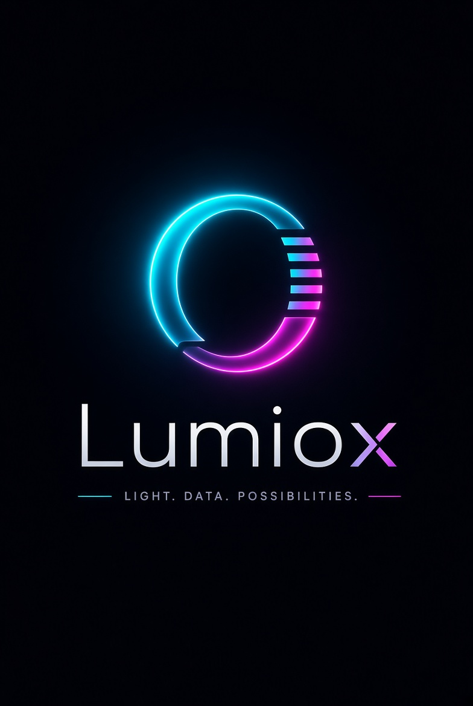

Willkommen bei Lumiox 🧙
In 5 Schritten ist dein Bot startklar.
1
2
3
4
5
1 · Discord-Bot-Token
Entwickler-Portal → Applications → dein Bot → „Bot" → „Reset Token". Aktiviere dort auch die beiden privilegierten Intents: Message Content und Server Members.
–
2 · Application-ID & Einladungslink
Entwickler-Portal → „General Information" → Application ID. Die Guild-ID (optional) bekommst du per Rechtsklick auf deinen Server → „Server-ID kopieren" (Entwicklermodus in Discord aktivieren).
–
3 · Lokale KI (Ollama)
Die KI-Moderation läuft 100 % lokal. Ohne Ollama funktioniert der Bot trotzdem (Wortfilter-Übernimmt).
–
Ollama ist nicht erreichbar. So startest du es in Termux (eigene Session):
Test von Hand:
pkg install ollama → ollama serve → in einer zweiten Session: ollama pull gemma2:2bTest von Hand:
curl http://127.0.0.1:11434/api/tags
4 · Dashboard-Login erstellen
Dieses Konto schützt dein Dashboard. Passwort wird gehasht gespeichert (scrypt).
–
Es existiert bereits ein Admin-Konto und du bist ausgeloggt.
Hier einloggen, dann kehrt automatisch zurück.
5 · Design wählen
Klicke auf eine Vorschau – das ganze Dashboard sieht sofort so aus. Jeder Regler ist später im Design-Editor frei einstellbar.